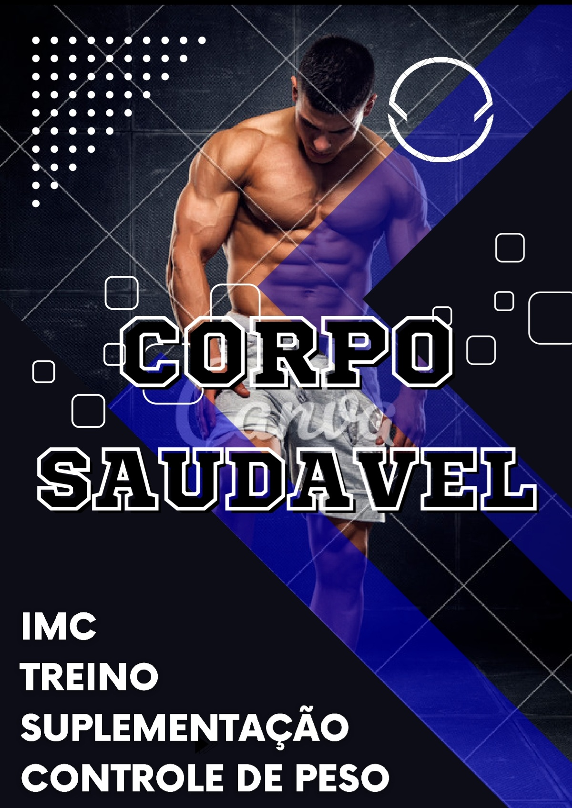

E-books para uma vida melhor
.png)
Promoção Exclusiva
3 E-books que juntos vão trazer você para uma nova realidade seja em desempenho de uma rotina que você buscar ou um corpo dos deuses, e uma alimentaçao que vai deixar você leve para alcançar objetivos jamais inesperados tudo isso e muito maiscom um preço baixo para caber no bolso de uma pessoa que buscar alto nivel. .
# E-Book Nutrientes
A alimentação é um aspecto fundamental da vida humana e desempenha um papel crucial na nossa saúde e bem-estar. Refere-se aos alimentos que consumimos para obter os nutrientes necessários para o funcionamento adequado do nosso corpo.
Um nutriente é uma substância química presente nos alimentos que o corpo humano utiliza para obter energia, promover o crescimento, manter e reparar tecidos, bem como realizar diversas funções fisiológicas. Os nutrientes são essenciais para o funcionamento adequado do organismo e são divididos em várias categorias com base em suas funções e composição.
- 50 paginas
- Aprenda o que é cada nutriente
- + 180 alimentos saudavel
- 12 alimento saudavel de cada nutriente
- Qual a importância de ingerir cada nutriente
Mais Informações
E-book Nutrientes : um conteudo para ajudar você a ter um corpo perfeito e uma saude inabalavel sem tomar qualquer remedio, so com apenas mudança de habitos que atrapalham a sua saude e com alimentaçao balanceada tudo isso você vai aprender e tomar as as propria decisão.
# E-Book Agenda Alimentar
Ter uma agenda é extremamente importante por várias razões. Organização: Uma agenda ajuda a manter sua vida organizada. Você pode registrar compromissos, datas importantes, tarefas e prazos, o que facilita o acompanhamento de suas obrigações e atividades diárias.
Gestão do Tempo: Uma agenda eficaz ajuda na gestão do tempo. Ela permite que você planeje seu dia, semana ou mês com antecedência, priorizando tarefas e garantindo que você tenha tempo suficiente para cumprir suas responsabilidades. Aumenta a Produtividade: Uma agenda ajuda a priorizar tarefas e alocar tempo para o que é mais importante. Isso pode aumentar sua produtividade, garantindo que você esteja focado nas atividades que realmente importam.
- Aprenda a planejar o seu dia
- + 36 dicas para montar uma refeição
- calendario de atividades fisicas
- 12 dicas sucos saudaveis
- dicas de refeições para cada horario do dia
Mais Informações
E-book Agenda Alimentar : aprendar a montar uma agenda para ter mais resultado e alcançar suas metas para você poder realizar todos os seus sonhos e atigir o apiz de desempenho no seu dia, seja no corpo na alimentaçao ou nos estudos tudo isso poder ajudar ate um longividade para você.
# E-Book Corpo Saudavel
O cuidado do corpo é fundamental para manter uma boa saúde física e mental ao longo da vida. Existem várias dimensões do cuidado do corpo que abrangem hábitos de vida saudáveis, exercícios físicos, alimentação balanceada, higiene pessoal e bem-estar emocional.
Um cronograma de academia é uma ferramenta importante para ajudá-lo a planejar e organizar seus treinos, garantindo que você atinja seus objetivos de condicionamento físico de maneira eficaz e consistente. A disciplina é uma qualidade fundamental para alcançar o sucesso em qualquer área da vida. Ela envolve a capacidade de se comprometer com metas e objetivos, manter o foco, ser consistente em seus esforços e tomar medidas mesmo quando não se sente motivado.
- Dicas de suplementação
- Controle do peso
- Como montar um treino
- Como sbaer quantas caloria deve ingerir
- Como saber se ocê está no peso ideal
Mais Informações

E-book Corpo Saudavel :
monter seu treino seja você homem ou mulher para você ter alto desempenho na academia e ter um corpo de um atleta de alta perfomace além de ter uma longividade e menos chace de contrair uma uma doença na sua velhice, e uma estertica acima da media igual um campeão.